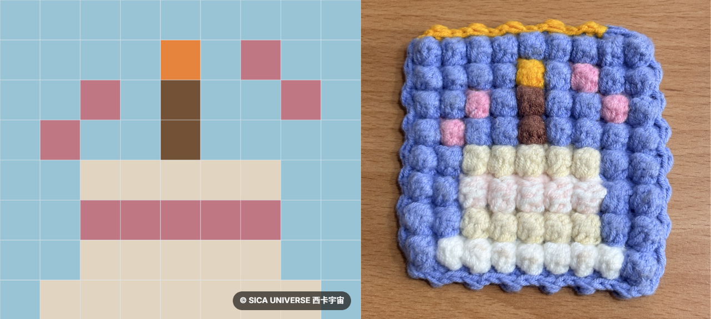

規格：9 × 8 格點畫板
按住並拖曳可連續上色
提示：先從左側選擇顏色與模式，接著直接在方格中點擊或滑動塗色。
致熱愛手作的編織創作者們
歡迎各位熱愛編織的手作老闆與工作室夥伴，將本網站作為與客戶討論客製配色的溝通工具！我們非常高興能對大家的創作有所幫助。如果覺得好用，在對外分享或引導客群使用時，請記得貼心標明網站出自「西卡宇宙 SICA UNIVERSE」唷！讓我們一起把編織的美好散播出去 ✨
參考案例

範例圖，僅供參考